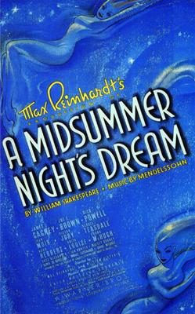

A Midsummer Night's Dream

Starring: James Cagney, Olivia de Havilland, Anita Louise
Director: Max Reinhardt, William Dieterle
Writer: Charles Kenyon, Mary C. McCall, Jr.
Producer: Henry Blanke
A Midsummer Night's Dream is a 1935 American romantic comedy film adaptation of the Shakespearean play of the same name. It is directed by Max Reinhardt and William Dieterle, produced by Warner Bros. Pictures, and stars James Cagney, Mickey Rooney, Olivia de Havilland (in her film debut), Jean Muir, Joe E. Brown, Dick Powell, Ross Alexander, Anita Louise, Victor Jory and Ian Hunter.
Trivia
- Won the Academy Award for Best Cinematography.
- Won the Academy Award for Best Film Editing.
- Also nominated for: Academy Award for Best Picture.
- Based on A Midsummer Night's Dream (play by William Shakespeare).
- At the time of production, legendary avante garde stage director Max Reinhardt had just arrived in the United States as a refugee from the imminent Nazi takeover of Austria.
- According to the Los Angeles Times, the production operated "on the scale of a small military operation, the production featured an ensemble of more than 400 artists, including 18 principals, 60 or so dancers and several hundred extras.
- The Bowl was reconfigured for the occasion.
Previous Showings
5 Runs • 3 Festivals
Original Billings: 2 runs (February 6 - October 15, 1936)
Original Run: February 6, 1936 (Thursday)
All runs on record (5):
- February 6, 1936 (Thursday)
- October 15, 1936 (Thursday - Saturday)James Cagney, Joe E. Brown
- April 10 - 12, 2012Winter 2012w/ What Price Hollywood?
- August 3 - 5, 2016Summer 2016w/ Duck Soup
- August 5 - 7, 2017Warner Brosw/ Yankee Doodle Dandy